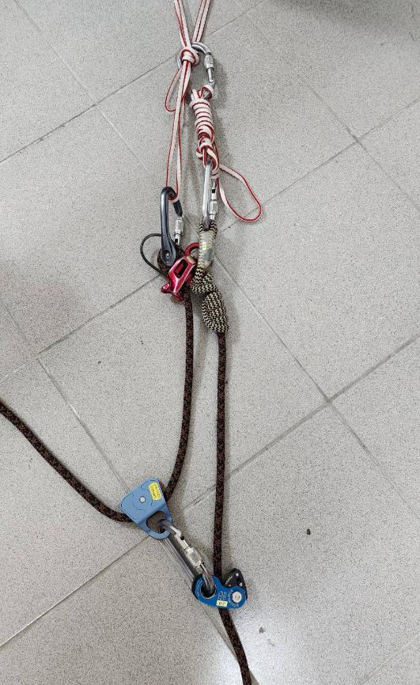
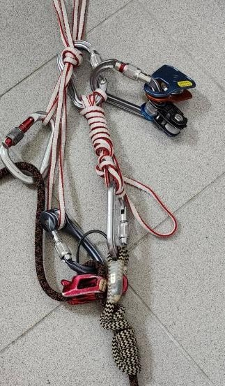
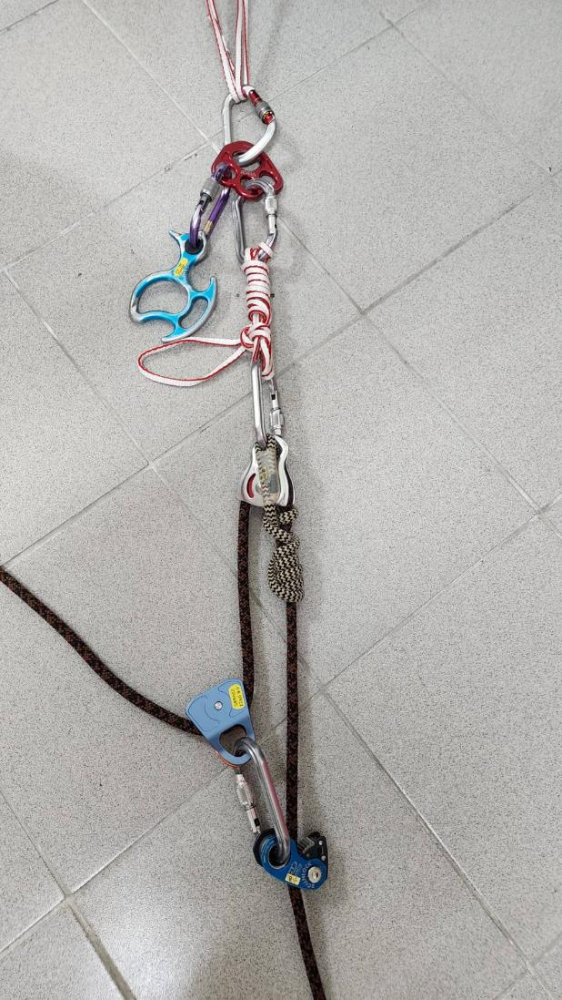
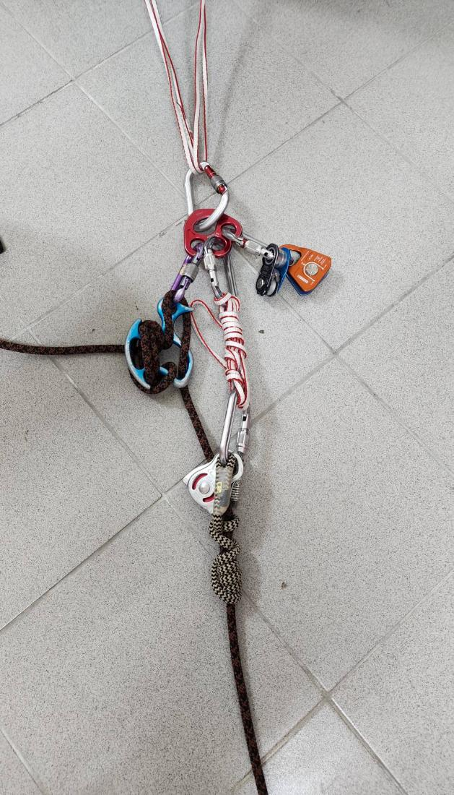
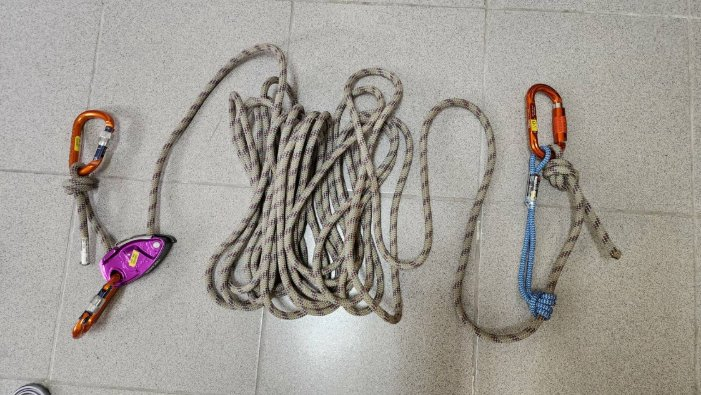
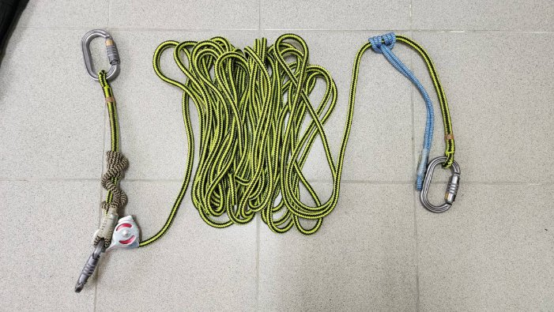
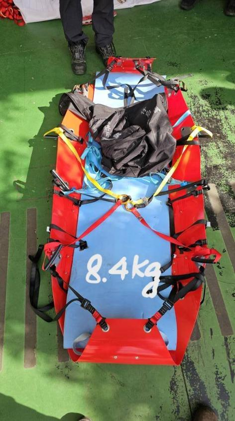
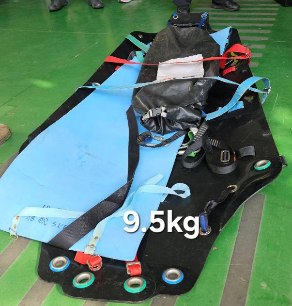
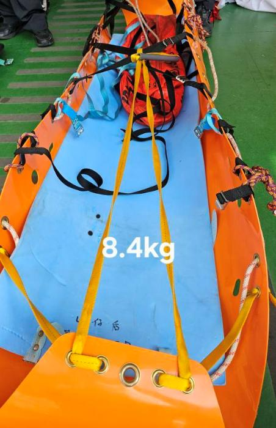

個人輕量化裝備 — 一套模組，個人裝備即是公裝
互動教學簡報 · 左側可隨時拉開匿名提問牆 🙋
🏕️ 你最常從事哪一種戶外活動？LIVE
點選你最常從事的活動（一人一票、可改選）；或在最後欄位自訂新增。
一套個人模組，有效率地實施上升下降
其實只有 1.1 ~ 1.2 公斤
（不包含主繩及特定活動的指定裝備）
先猜一個公斤數，→ 下一頁用文字雲寫下，再看實際的公裝重量。
整組個裝即是公裝（山域搜救）
約 2.1 ~ 2.2 公斤
由個人模組裝備即可組成的第一種拖拉系統


第二種組裝方式，核心改用 OKA 下降器與分立盤


| 品牌 / 名稱 | 數量 | 重量 |
|---|
拖拉系統的省力，來自滑輪組的機械利益。下方為講師自製的互動網頁，可直接操作。
來源：phu00572.github.io/Pulley-tension
| 分類 | 裝備 / 名稱 | 組重 | 功能 |
|---|
一組多用、雙頭操作 —— 切換系統不必拆裝，省時又省重





一套模組、個人裝備即是公裝 —— 讓每一克都用在對的地方。
還有問題嗎？點左側 🙋 提問牆，匿名發問。